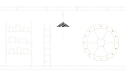

Dead Set
Day II
Discussion · Underground Bunker 1:59 Two stand accused
Two stand accused
AAda
BBo
CCy
DDi
EEd
FFay
GGus
Majority Rule more than 3.5 weight neededCursed Silence
The Dead Set Gazette
Underground BunkerDay II edition6 of 7 alive
IIDay
Two stand accused
Di accuses BoEd seconds BoBo accuses Cy
INight
Ada did not wake
Ada found dead
IDay
A tied vote spares all
Gus 3Cy 3Nobody sentenced
0Night
The story begins
Space Explorersan Underground BunkerEscape Before Time Runs Out